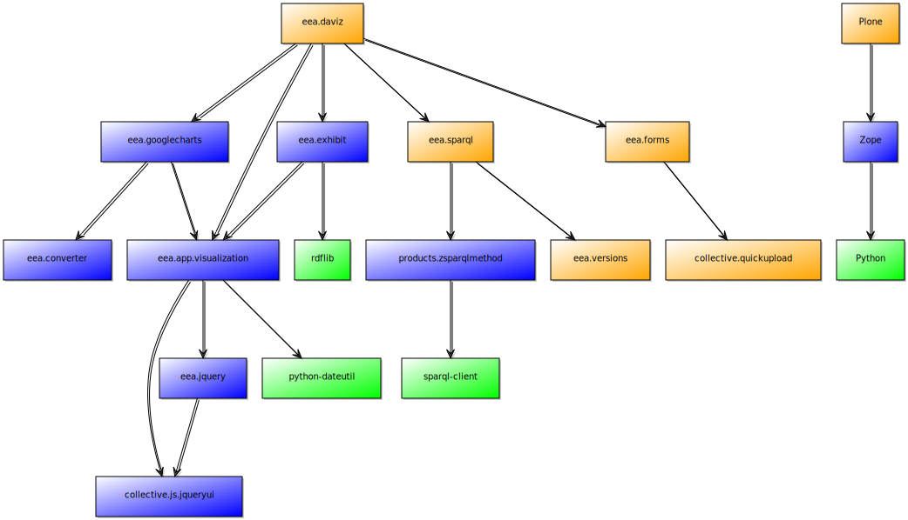
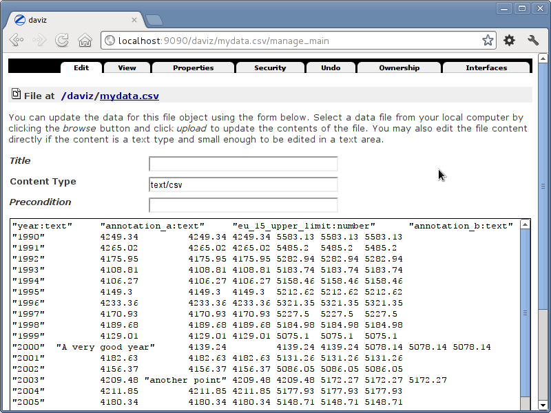
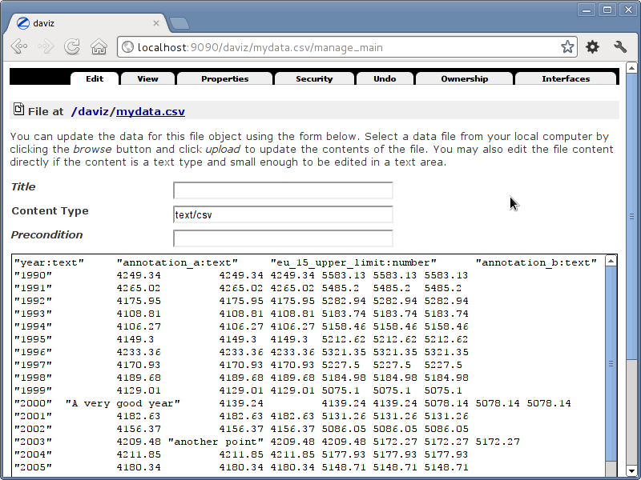

EEA Daviz Developer Documentation¶
EEA Daviz has a wide array of APIs that let you extend it’s functionality.
Discover what you can do with the EEA Daviz APIs¶
Integration with Zope and other Zope frameworks¶
EEA Visualization packages were designed to work also outside Plone/CMF, having a minimal dependency of Zope 2. Not all the Visualization packages are Plone independent, that’s why you may not find all the features provided by EEA Daviz bundle for Plone in the Zope version of these packages.
The following diagram describes how packages depends each other and which one are Plone dependent or not:
Where should I start?¶
We prepared for you a demo buildout containing all the visualization packages that also work on Zope. If you, for example, want only Google Charts integration you can start with Google Charts demo buildout, same for the Simile Exhibit integration.
Considering that you already ran one of the above buildouts and your Zope instance is up and running, let’s see how this is supposed to work:
1. Data source¶
You will need a Tab/Comma separated file, currently the only supported data formats for Zope integration (more about extending this can be found within the EEA App Visualization API documentation).
Upload the above file within a Zope existing Folder using the Zope Management Interface (ZMI):
http://localhost:9090/daviz/manage_addProduct/OFSP/fileAdd
 

2. Visualization¶
In order to visualize this data file you either add a specific visualization object (we called it Daviz Visualization), or you just enable visualization in-place on the file object. As the first option is available only for the Plone users, and that’s because there is no standard API for related items in Zope, we’ll have to stick to the in-place enabling solution. Still, you can easily extend this within your custom integrations.
Enable visualization:
http://localhost:9090/daviz/mydata.csv/daviz_support/enable
This will enable visualization for current file and redirect you to the visualization editor page:
http://localhost:9090/daviz/mydata.csv/daviz-edit.html

After your done editing the visualization you can view the results at:
http://localhost:9090/daviz/mydata.csv/daviz-view.html
To disable visualization, you’ll have to simply call:
http://localhost:9090/daviz/mydata.csv/daviz_support/disable
XXX: To be continued...